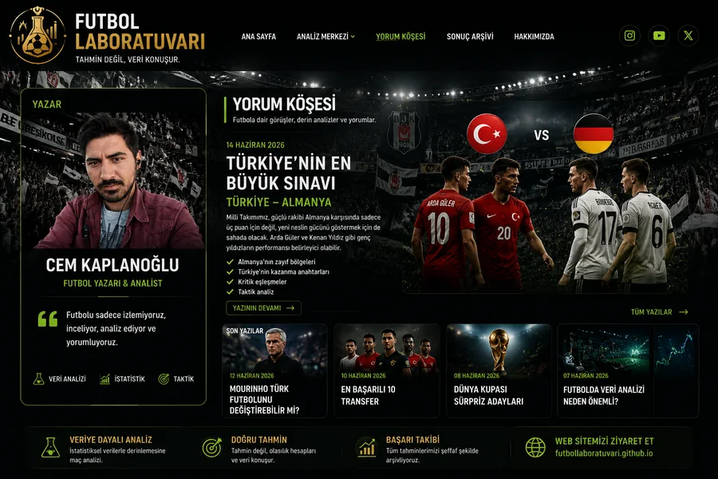
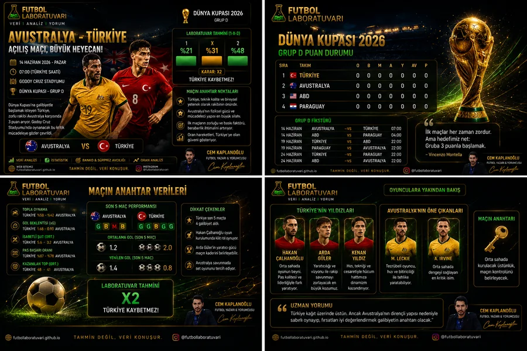

Profesyonel spor kupon ve maç analizi merkezi
Futbol Laboratuvarı
Günün maçları, güçlü tahminler, güven seviyesi ve kupon önerileri tek ekranda sade ve anlaşılır şekilde sunulur.
Premium Kupon Merkezi
Günün kuponları ve öne çıkan tahminler
Tekli, 2'li ve 3'lü kupon seçenekleri günün maçlarına göre ayrı ayrı listelenir. Amaç; karmaşık tablo yerine hızlı okunabilen temiz bir kupon ekranı sunmaktır.
Tekli Kuponlar
2'li Kuponlar
3'lü Kuponlar
Bu sayfadaki içerikler maç yorumu ve kişisel değerlendirmedir; kesin sonuç garantisi vermez.
Bugünün Maçları
Bugün ve yakındaki maçlar
Maçlar tarih sırasına göre listelenir. Oynanmayan maçlar ayrı görülür, sonuçlanan maçlar ise başarı bölümüne taşınabilir.
Hakkımızda
Cem Kaplanoğlu
Spor Yazarı ve Futbol Yorumcusu
Futbol Laboratuvarı; maçları sadece skor olarak değil, form, kadro, oran, saha içi denge ve maç hikayesiyle birlikte okumayı hedefler.

Galeri
Futbol Laboratuvarı görsel arşivi
Logo, sosyal medya içerikleri ve maç yorumu görselleri kompakt kart düzeninde sunulur.
Futbol Laboratuvarı

Maç Yorumu Serisi

Spor Toto Dosyası

Yorum Köşesi

Futbol Laboratuvarı Görseli
Yorum Köşesi
Maçı sadece skorla değil, hikayesiyle oku
Maç önü senaryolar, oran davranışı, kadro dengesi ve psikolojik eşikler tek çatı altında yorumlanır. Amaç hızlı tahminden çok, kararın arkasındaki futbol aklını görünür kılmaktır.
Spor Toto
1-X-2 seçimleri ve kupon ayrımı
Banko, beraberlik adayı, sürpriz adayı ve çifte şans seçenekleri maç bazlı değerlendirilir.
Günün Seçimi
Bugünün en güçlü tahmini
Maç Yorumları
Maç bazlı detaylı değerlendirmeler
Her maç; form, kadro, oran hareketi, risk ve maç hikayesiyle birlikte okunur.
Maç Kayıtları
Geçmiş maçlar ve tahmin notları
Geçmiş değerlendirmeler, tahminler ve sonuçlar düzenli bir kayıt alanında tutulur.
| Tarih | Lig | Maç | Yorum Türü | Tahmin | Oran | Güven | Skor Tahmini | Gerçek Skor | Sonuç |
|---|
Başarılar
Sonuçlanan tahminlerin kaydı
| Tarih | Maç | Tahmin | Oran | Skor | Güven | Sonuç |
|---|
Performans
Kupon türlerine göre başarı takibi
Nasıl Değerlendiriyoruz?
Tahmini oluşturan ana başlıklar
Form Durumu
Takımların son maçlardaki gidişatı, gol üretimi ve savunma dengesi.
Kadro Durumu
Eksikler, rotasyon, takım derinliği ve oyuncu dengesi.
Oran Hareketi
Maç öncesi oran değişimleri ve risk-ödül dengesi.
Oyun Planı
Takımların sahaya nasıl çıkabileceği ve maç içi hamle ihtimali.
Maç Sonu Gücü
Son dakikalardaki gol bulma, gol yeme ve baskı tepkisi.
Mental Durum
Geriye düşme tepkisi, deplasman baskısı ve motivasyon.
Genel Güven
Tüm başlıkların birlikte değerlendirilmesiyle tahmin güveni oluşur.